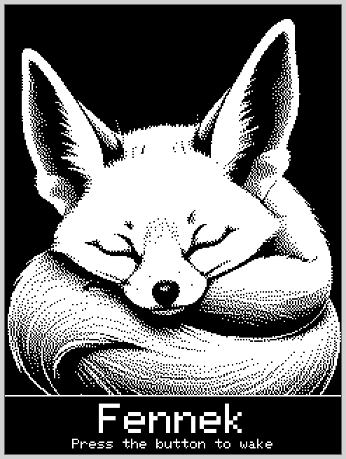
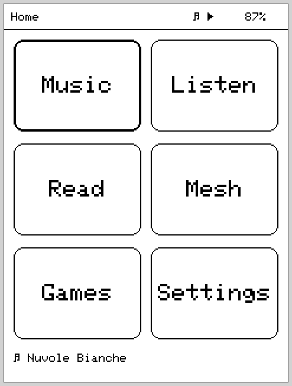
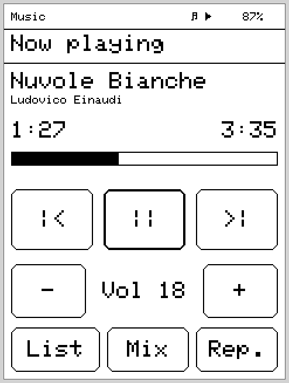
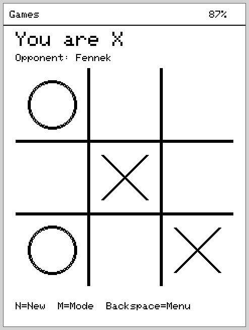
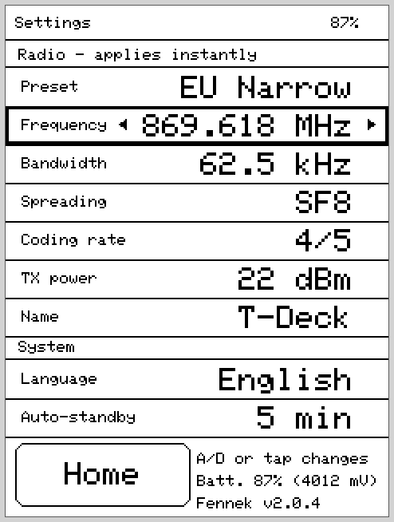

🎵 Music
MP3/AAC/FLAC/WAV from SD, artist/album/playlist browser, ID3 tags (cached), shuffle & repeat, sleep timer, resume after reboot.

An alternative open-source firmware for the
LilyGO T-Deck Pro.
Music, audiobooks, eBooks and LoRa mesh chat — in one handheld. Like the desert fox: small, frugal, big ears.
GPL-3.0-or-later ESP32-S3 E-Ink 240×320 LoRa / MeshCore
Fennek turns the LilyGO T-Deck Pro (ESP32-S3, E-Ink, LoRa) into a real handheld: listen to music, resume audiobooks, read eBooks and chat over the LoRa mesh via MeshCore — with a homescreen launcher, touch + physical keyboard, and background audio that keeps playing across app switches.
It is a standalone alternative to the factory firmware — built around the hardware's defining quirk, that E-Ink, the SD card and LoRa all share one SPI bus, while still delivering stutter-free audio playback.
MP3/AAC/FLAC/WAV from SD, artist/album/playlist browser, ID3 tags (cached), shuffle & repeat, sleep timer, resume after reboot.
Books as folders under /audiobooks, chapters natural-sorted, per-book bookmark, ±30 s jumps, sleep timer.
.txt and .epub from /books, on-device EPUB conversion, page-index cache, per-book reading position.
Lean MeshCore client: public & hashtag channels, DMs with delivery status, contacts from adverts, message log on SD with history reload.
2048, Minesweeper, Chess (Negamax AI) and Tic-Tac-Toe — game logic host-tested.
One note per day under /notes. "+ Today" opens or appends; list shows every day newest-first with a preview.
Subscribe to RSS feeds (/podcasts/feeds.txt), sync the latest episode over Wi-Fi and keep only that one — downloaded straight to SD.
Radio presets (EU Narrow), individual LoRa parameters, node name, battery info, firmware version.
Status line (battery, playback), key-lock & standby via the button, and a serial debug console over USB.
Rendered pixel-accurately from the real drawing code (240×320 E-Ink).




The T-Deck Pro is a lovely device with four awkward constraints. Fennek is really the story of working with them rather than against them — the defining one being that E-Ink, the SD card and LoRa share one SPI bus. The architecture revolves around audio never stuttering despite that, and inputs responding instantly:
There is no battery-backed RTC. The canonical clock is the ESP32 system
time, which survives deep sleep (the older millis() clock lost
the whole sleep duration). It is set, in priority order, from GPS,
NTP (when Wi-Fi is briefly up) and mesh adverts;
drift is learned over time and a future-dated packet can never drag the
clock forward unchecked.
Staying connected forever isn't possible on this power budget — and Wi-Fi and audio can't even run at once (the Wi-Fi task on core 0 evicts the audio task). So Fennek never holds a connection: scrobbles, note polishing and podcast downloads are batched into a short Wi-Fi window before standby, and unused peripherals (GPS, haptics) are powered down at boot.
Two CPU cores mean barely any true multitasking. Fennek pins audio decoding to core 0 and the UI + mesh pump to core 1, pauses SD library scans while audio is playing, and runs heavier work (the chess AI) at low priority — so playback stays smooth and the keyboard stays responsive.
E-Ink is gorgeous but slow, and full refreshes flash the whole panel. Fennek redraws only on a real change, paints progress bars and status as narrow region strips instead of full repaints, and stretches the anti-ghosting full refresh out to keep the screen calm.
The full set of anti-stutter invariants and
these design decisions live in
CLAUDE.md.
LilyGO T-Deck Pro V1.1:
Prerequisite: PlatformIO. Connect via USB-C, then:
pio run -e fennek # build
pio run -e fennek -t upload # flash (USB-C)
pio device monitor -b 115200 # log + debug consoleRuns even without an SD card. Custom firmware replaces the factory software — flash at your own risk.